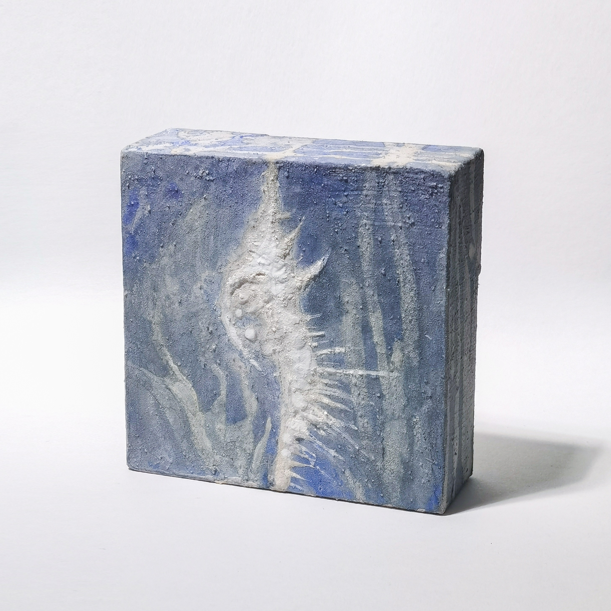
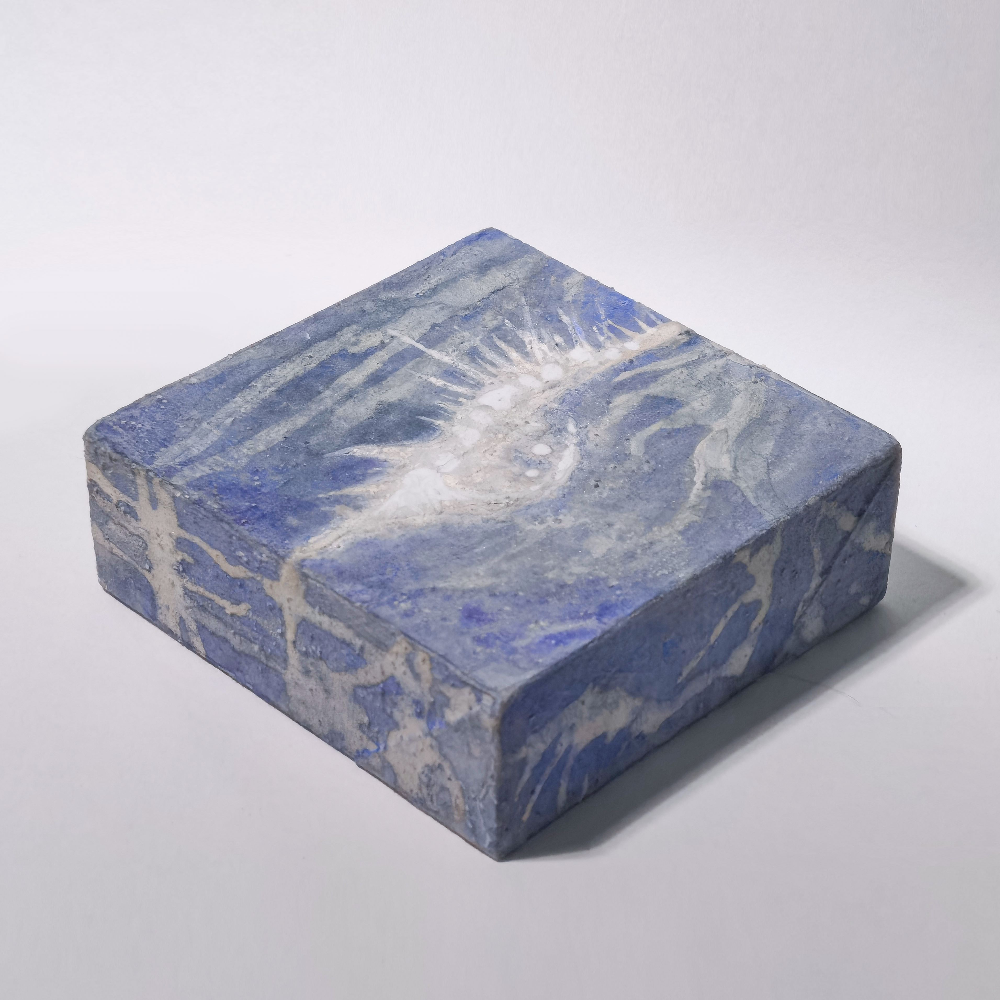

Chalk Curret
Mineral Pigment Painting (iwa-enogu) on Paper and Wood Canvas
Ongoing Series, From Aug 2025
"Bone, snail, tree",
Chalk Currents, Series NO.1
10x10x3.5cm, 2025




"Bird, flower, tears",
Chalk Currents, Series NO.2
10x10x3.5cm, 2025


"Breathing inside the seabed",
Chalk Currents, Series NO.3
10x10x3.5cm, 2025